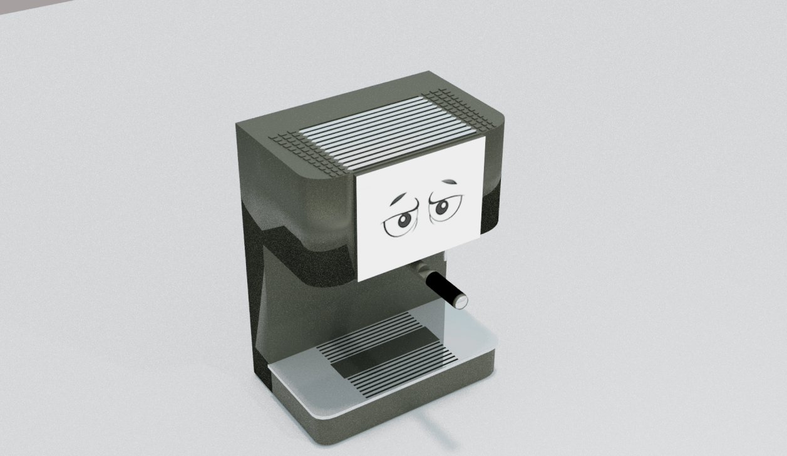

Pavillion is a social network based on smart-office technology. The core concept is bringing people together safely, by using gathering points. These gathering points each have their own function. They can be work related, such as finding someone with specific knowledge. But also informal, such as finding someone to take a walk outside.
Background
Offices are pleasant spaces that facilitate focussed work, warm social encounters, engaging collaborations and inspiration. Offices are also very intuitive, socially driven and tactile spaces. So, how can people behave intuitively and comfortably and still make sure they stay healthy when viral infection is more likely than before?

Instead of defining the people in a persona, I’ve used a value proposition. My philosophy was that the product was the office itself, I wanted to know how they used this product, what their pains and gains were while working here in the covid situation. Their age and gender was irrelevant to the question.
Defining the problem
I love researching. I get obsessive and collect data till I drop. I have done extensive UX research with over twenty user interviews, transcribed and analyzed over 30k words of interview data. Turn them into affinity maps, journeys, empathy maps and rip them apart just to reframe them again. However...
Being proud of my research I presented all these graphs successfully overloading them with information. They did not want to see these graphs, instead they wanted to know what I was going to do and why. They didn’t care about the graphs. This taught me a big lesson. When communicating with the case owners the primary focus should be the future actions I want to take. Not try to prove myself to show all the past work I have done.
Design Principles
Spontaneity: People want unpredictability. Unplanned encounters, random small talk. This stimulates inspiration and motivation.
Bringing People Together: Now more than ever, people want to be together. Colleagues aren’t just colleagues, they are considered like friends.
Real Interaction: People want to interact face to face, in the same room, seeing each other. They want interaction to feel “Real”.
Inspiration
Controlling and managing space, while also stimulating serendipity seems like a paradox. To see how spontaneity and smart technology came together, I searched for some inspiration. The most interesting one was a smart toilet in Shanghai. The goal of this was to decrease waiting queues at the toilets. What I learned from this was that one way of managing space is not to control where people go, but to guide them in making the best choice. This was a principle I took with me when I designed my own smart solution.
Eventually I was left with three concepts… These concepts were presented to the case owners and shared with the people to get some external feedback. The first concept I went for was coughy. Coughy was a smart coffee machine that attempted to guide people with keeping distance.
Coughy had a face and displayed emotions based on sensor data. He would get worried when it got too busy and stare at people who were standing too close. The data for measuring this were thermal sensors. However, as fun as the concept was. I decided to kill my darling. This concept was covid centered, not human centered. I got too excited because the idea sounded funny, but from a people perspective it was very gimmicky.
Final Concept
The final concept was Pavillion. The idea was to combine event based social networks and a GIS format. Using the idea from events to bring people together, the idea of the GIS format as a meta representation of the office, giving employees a bird eye perspective of what kind of ‘events’ are happening around the office.
These events act as gathering points. The events were based on the JTBD that were discovered in the research. Things such as; finding someone to take a walk outside during the break, quickly finding people for some collaborative event (brainstorming, prototype testing, etc). But also finding experts on specific subjects in order to use the collective knowledge of the employees for the projects.
Prototyping
Having tested it multiple times I had many interesting insights. Beside optimisations, the most important insight in the end were:
1: People who have the goal to socialize, or do something in the physical space, don’t want to spend time in an interface. Therefor the interaction in the device must be as short as possible.
2: Focus on the open space. Because meeting rooms are usually booked and there are many better alternatives for booking meetings, the USP of Pavillion isn’t booking rooms, it is booking areas in the open space.
3: Smart settings. Creating events requires a lot of details, such as how many people, what kind of event, which location, etc. This greatly increases the interaction cost of the product. By using smart settings preferences can be predicted.
Reflection
The most important thing I’ve learned about this project is effective use of design principles and guidelines. These guidelines helped me connect the research and ideation phase, helped me keep focus while choosing concepts and helped me keep focus during user testing. Before this I always felt my research, ideation and testing was disconnected.